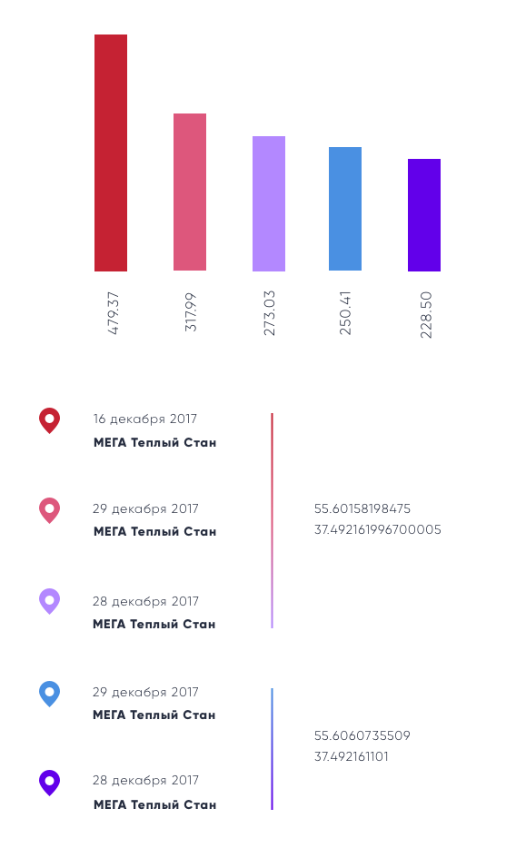
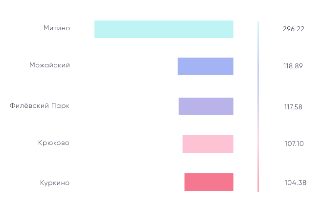

Журналистика данных. Красивая.
Журналистика должна быть красивой. Журналистика должна быть "нужной", чтобы ее можно было использовать.
Именно поэтому мы сделали ставку не на сравнение количества транзакций раффайзенбанка с количеством звонков (это достаточно наглядно, но практического применения, как и выводов, не имеет), а на дизайн и аналитику.
Проанализировав количество звонков из различных зон, мы выяснили, что ТОП-5 по количеству составляют звонки из Мега Теплый Стан.
Мы думаем, что имеет место корреляция между предновогодними датами звонков и возрастающим в это время количеством посетителей торговых центров.
Вывод
Правительству Москвы, как и владельцам Меги, следует подумать о размещении скорой помощи в непосредственной близости с торговым комплексом.
Выше представлен график среднего количества звонков по дням недели из зоны.
Заметно, что число вызовов экстренных служб возрастает в рабочие дни, так как большое количество людей, находясь в условиях стрессовой ситуации, испытывают проблемы со здоровьем.
Вывод
В рабочие дни требуется большее количество медицинских работников, чем в выходные.
Данная визуализация иллюстрирует количество вызовов скорой по месяцам.
Пик приходится на декабрь. Возможное объяснение этого - новогодние праздники, а также учащающиеся (с приходом холодов) случаи падения бабушек (привет Хармсу).
Вывод
Зимой требуется больше сотрудников, чем летом.
Мы получили среднее количество вызовов в день из различных городских образований, определив принадлежность зон к каждому из них.
Полученные данные могут быть объяснены различными экологическими ситуациями в разных районах столицы, площадью застройки, а также социальными данными населения.
Вывод
Требуется расположить больше карет скорой помощи в данных городских образованиях.
Спасибо за просмотр :)